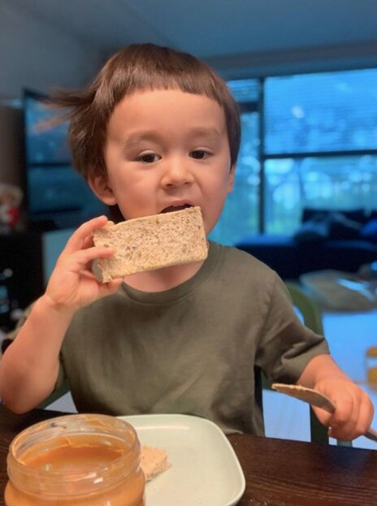
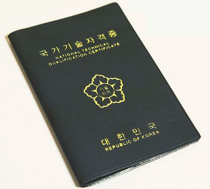
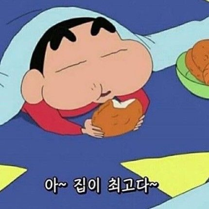
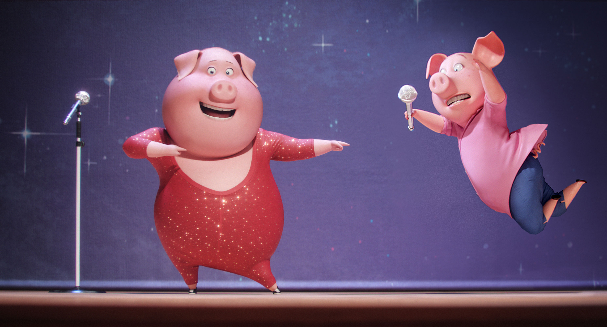

GEON.HO 2021/04
-
07:40 ~ 08:00

기상시간 박차고일어나기
못일어 날 시 그 시간만큼 공부시간추가
-
08:30 ~ 09:15

공복운동 맨몸위주(풀업/친업/푸쉬업)
하체는 월/수/금 + 무게운동은 저녁
-
09:35 ~ 10:10
아침먹방 (저)탄수,지방(고)단백
가끔씩 라면/인스턴트 허락. But고탄수X
-
10:10 ~ 12:00
간단공부(정처기) 수제비/문제풀이/교과서
수제비 기사 문제 매일 확인하기/시나공등 다양하게
-
12:10 ~ 13:00
점심먹방 든든하게먹기
균형잡힌 식사로 긴시간 공복유지 가능하게
-
14:00 ~ ??:??
프론트엔드/정처기 공부 카페/코딩공부/정처기
카페 갈 시 HTML파일 하나씩 만들기/정처기 문제3회 이상
-
19:30 ~ 20:30
저녁먹방(냐미냐미) 하루의 마무리 식사/균형잡히게
단백질 위주 공급/적당한 탄수화물 먹방(고기먹고싶어요)
-
20:40 ~ 23:00
자유시간/게임/운동/등 "하루를 마무리하기 전 놀기"
운동 할 시:무게/덤벨 - 나머지는 자유
-
23:10 ~ 00:30
독서/뉴스/지식수양/취침 기본 지식 수양(인터넷기사등)/잠자기
그날그날 무슨일이 있었나 최소 알고 자기